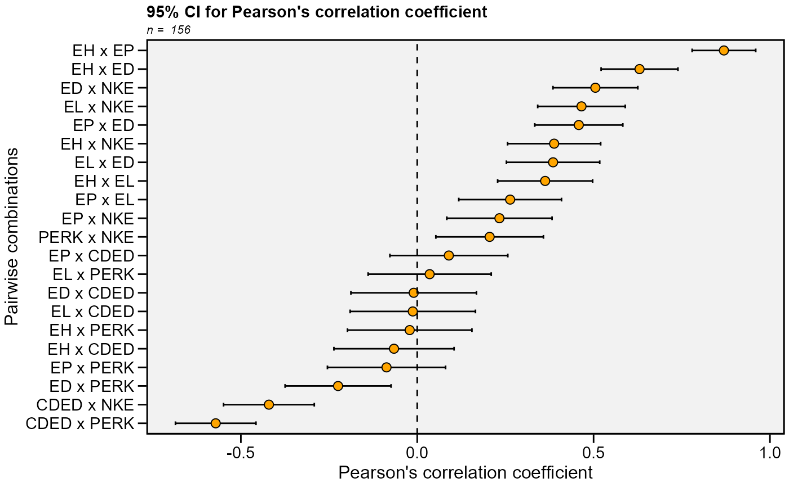
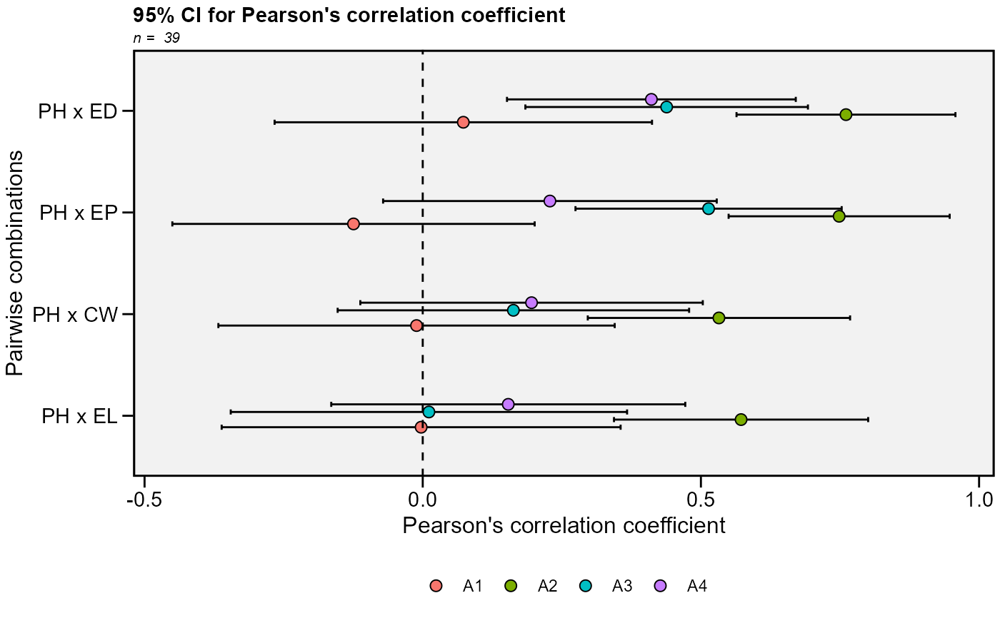

![[Stable]](figures/lifecycle-stable.svg)
This function plots the 95% confidence interval for Pearson's correlation
coefficient generated by the function corr_ci.
Usage
plot_ci(
object,
fill = NULL,
position.fill = 0.3,
x.lab = NULL,
y.lab = NULL,
y.lim = NULL,
y.breaks = waiver(),
shape = 21,
col.shape = "black",
fill.shape = "orange",
size.shape = 2.5,
width.errbar = 0.2,
main = TRUE,
invert.axis = TRUE,
reorder = TRUE,
legend.position = "bottom",
plot_theme = theme_metan()
)Arguments
- object
An object generate by the function
corr_ci()- fill
If
corr_ci()is computed with the argumentbyusefillto fill the shape by each level of the grouping variableby.- position.fill
The position of shapes and errorbar when
fillis used. Defaults to0.3.- x.lab
The label of x-axis, set to 'Pairwise combinations'. New arguments can be inserted as
x.lab = 'my label'.- y.lab
The label of y-axis, set to 'Pearson's correlation coefficient' New arguments can be inserted as
y.lab = 'my label'.- y.lim
The range of x-axis. Default is
NULL. The same arguments thanx.limcan be used.- y.breaks
The breaks to be plotted in the x-axis. Default is
authomatic breaks. The same arguments thanx.breakscan be used.- shape
The shape point to represent the correlation coefficient. Default is
21(circle). Values must be between21-25:21(circle),22(square),23(diamond),24(up triangle), and25(low triangle).- col.shape
The color for the shape edge. Set to
black.- fill.shape
The color to fill the shape. Set to
orange.- size.shape
The size for the shape point. Set to
2.5.- width.errbar
The width for the errorbar showing the CI.
- main
The title of the plot. Set to
main = FALSEto ommite the plot title.- invert.axis
Should the names of the pairwise correlation appear in the y-axis?
- reorder
Logical argument. If
TRUE(default) the pairwise combinations are reordered according to the correlation coefficient.- legend.position
The position of the legend when using
fillargument. Defaults to"bottom".- plot_theme
The graphical theme of the plot. Default is
plot_theme = theme_metan(). For more details, seeggplot2::theme().
Examples
# \donttest{
library(metan)
library(dplyr)
# Traits that contains "E"
data_ge2 %>%
select(contains('E')) %>%
corr_ci() %>%
plot_ci()
#> # A tibble: 21 × 7
#> V1 V2 Corr n CI LL UL
#> <chr> <chr> <dbl> <int> <dbl> <dbl> <dbl>
#> 1 EH EP 0.870 156 0.0901 0.779 0.960
#> 2 EH EL 0.363 156 0.135 0.228 0.497
#> 3 EH ED 0.630 156 0.109 0.521 0.739
#> 4 EH CDED -0.0659 156 0.170 -0.236 0.104
#> 5 EH PERK -0.0213 156 0.176 -0.198 0.155
#> 6 EH NKE 0.388 156 0.132 0.256 0.520
#> 7 EP EL 0.263 156 0.146 0.118 0.409
#> 8 EP ED 0.458 156 0.125 0.333 0.583
#> 9 EP CDED 0.0897 156 0.167 -0.0775 0.257
#> 10 EP PERK -0.0871 156 0.167 -0.255 0.0804
#> # ℹ 11 more rows

# Group by environment
# Traits PH, EH, EP, EL, and ED
# Select only correlations with PH
data_ge2 %>%
corr_ci(PH, EP, EL, ED, CW,
sel.var = "PH",
by = ENV) %>%
plot_ci(fill = ENV)
#> # A tibble: 4 × 7
#> V1 V2 Corr n CI LL UL
#> <chr> <chr> <dbl> <int> <dbl> <dbl> <dbl>
#> 1 PH EP -0.124 39 0.326 -0.450 0.201
#> 2 PH EL -0.00287 39 0.359 -0.361 0.356
#> 3 PH ED 0.0729 39 0.339 -0.266 0.412
#> 4 PH CW -0.0111 39 0.356 -0.367 0.345
#> # A tibble: 4 × 7
#> V1 V2 Corr n CI LL UL
#> <chr> <chr> <dbl> <int> <dbl> <dbl> <dbl>
#> 1 PH EP 0.748 39 0.199 0.550 0.947
#> 2 PH EL 0.572 39 0.228 0.344 0.801
#> 3 PH ED 0.761 39 0.197 0.564 0.958
#> 4 PH CW 0.532 39 0.236 0.297 0.768
#> # A tibble: 4 × 7
#> V1 V2 Corr n CI LL UL
#> <chr> <chr> <dbl> <int> <dbl> <dbl> <dbl>
#> 1 PH EP 0.514 39 0.239 0.275 0.753
#> 2 PH EL 0.0111 39 0.356 -0.345 0.367
#> 3 PH ED 0.438 39 0.254 0.184 0.692
#> 4 PH CW 0.163 39 0.316 -0.153 0.479
#> # A tibble: 4 × 7
#> V1 V2 Corr n CI LL UL
#> <chr> <chr> <dbl> <int> <dbl> <dbl> <dbl>
#> 1 PH EP 0.229 39 0.300 -0.0712 0.528
#> 2 PH EL 0.154 39 0.318 -0.164 0.472
#> 3 PH ED 0.411 39 0.260 0.151 0.671
#> 4 PH CW 0.196 39 0.308 -0.112 0.503

# }